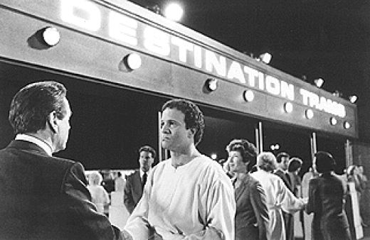
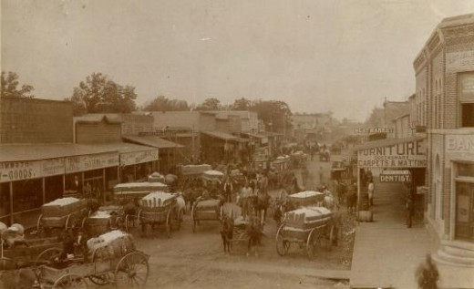
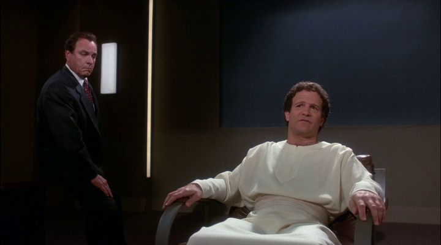
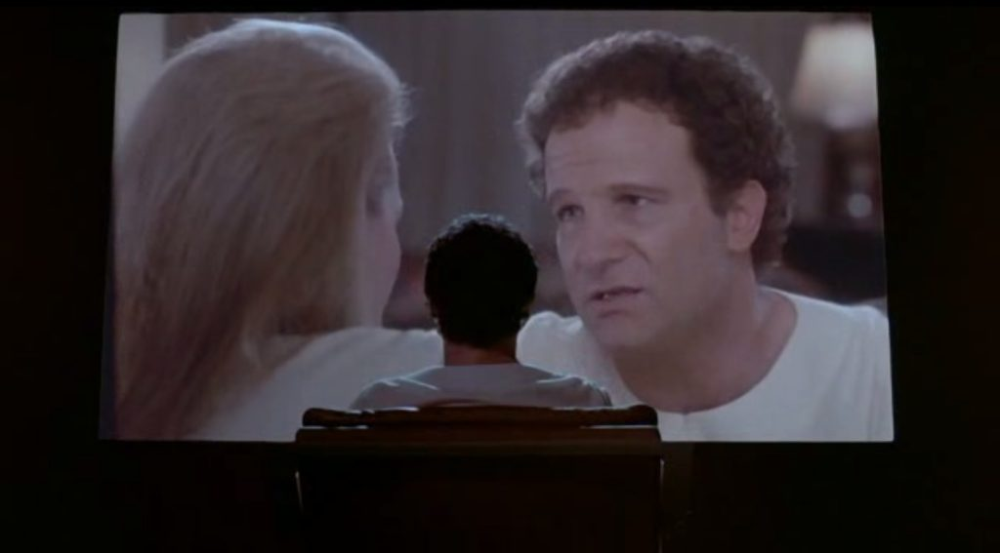
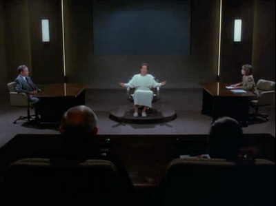
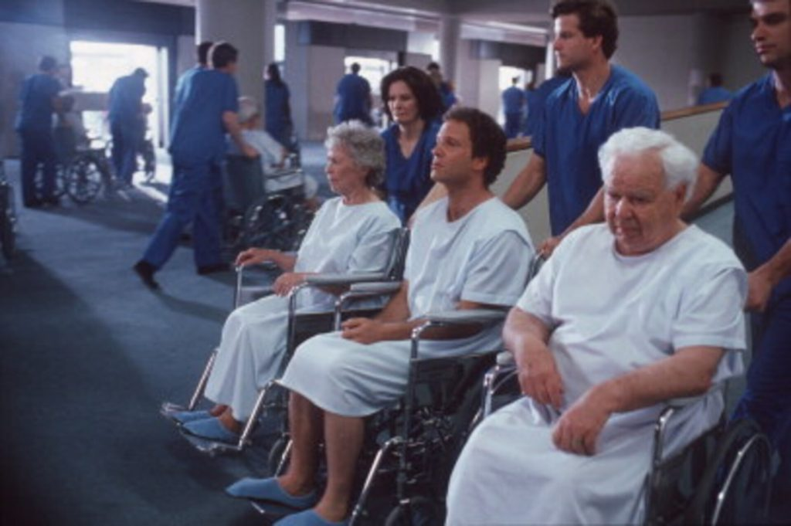
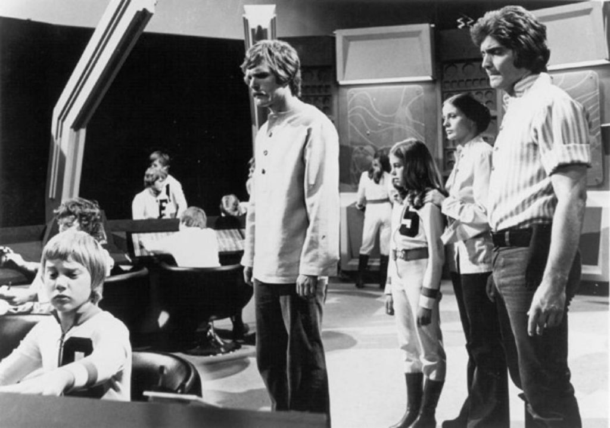
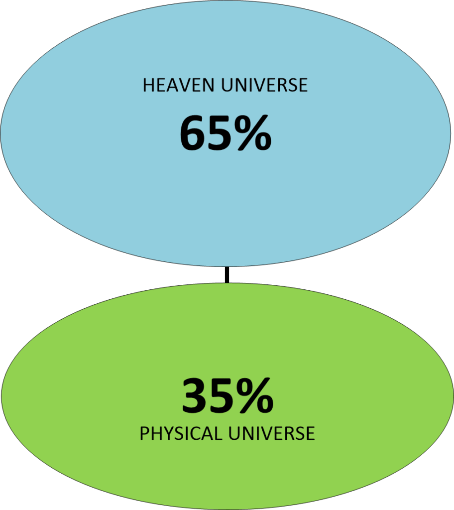

Multiple Part Post
This post is a multiple part post. I have labeled them…
- The Geography of Heaven; Journey of Souls – 1a
- The Geography of Heaven; Journey of Souls – 1b – This post.
- The Geography of Heaven; Journey of Souls – 1c
- The Geography of Heaven; Journey of Souls – 1d
- The Geography of Heaven; Journey of Souls – 1e
Orientation
AFTER those entities who meet us during our homecoming have dispersed, we are ready to be taken to a space of healing. This will be followed by another stop involving the soul’s reorientation to a spiritual environment. In this place we are often examined by our guide.
I tend to call the cosmology of all spiritual locations as places, or spaces, simply for convenient identification because we are dealing with a non-physical universe. The similarity of descriptions among clients of what they do as souls at the next two combined stops is remarkable, although they do have different names for them. I hear such terms as: chambers, travel berths, and interspace stop over zones, but the most common is “the place of healing.”
I think of the healing station as a field hospital, or MASH unit, for damaged souls coming off Earth’s battlefields. I have selected a rather advanced male subject who has been through this revitalization process many times to describe the nature of this next stop.
Case 11 – The Revitalization process.
Dr. N: After you leave the friends who greeted you following your death, where does your soul go next in the spirit world?
S: I am alone for a while … moving through vast distances …
Dr. N: Then what happens to you?
S: I am being guided by a force I can’t see, into a more enclosed space-an opening into a place of pure energy.
Dr. N: What is this area like?
S: For me … it is the vessel of healing.
Dr. N: Give me as much detail as possible about what you experience here.
S: I’m propelled in and I see a bright warm beam. It reaches out to me as a stream of liquid energy. There is a … vapor-like … steam swirling around me at first … then gently touching my soul as if it were alive. Then it is absorbed into me as fire and I am bathed and cleansed from my hurts.
Dr. N: Is someone bathing you, or is this light beam enveloping you from out of nowhere?
S: I am alone, but it is directed. My essence is being bathed … restoring me after my exposure to Earth.
Dr. N: I have heard this place is similar to taking a refreshing shower after a hard day’s work.
S: (laughs) After a lifetime of work. It’s better and you don’t get wet, either.
Dr. N: You also don’t have a physical body anymore, so how can this energy shower heal a soul?
S: By reaching into … my being. I’m so tired from my last life and with the body I had.
Dr. N: Are you saying the ravages of the physical body and the human mind leaves an emotional mark on the soul after death?
S: God, yes’. My very expression-who I am as a being-was affected by the brain and body I occupied.
Dr. N: Even though you are now separated from that body forever?
S: Each body leaves … an imprint … on you, at least for a while. There are some bodies I have had that I can never get away from altogether. Even though you are free of them you keep some of the outstanding memories of your bodies in certain lives.
Dr. N: Okay, now I want you to finish with your shower of healing and tell me what you feel.
S: I am suspended in the light … it permeates through my soul … washing out most of the negative viruses. It allows me to let go of the bonds of my last life … bringing about my transformation so I can become whole again.
Dr. N: Does the shower have the same effect upon everyone?
S: (pause) When I was younger and less experienced, I came here more damaged- the energy here seemed less effective because I didn’t know how to use it to completely purge the negativity. I carried old wounds with me longer despite the healing energy.
Dr. N: I think I understand. So, what do you do now?
S: When I am restored, I leave here and go to a quiet place to talk to my guide.
This place I have come to call the shower of healing is only a prelude for the rehabilitation of returning souls. The orientation stage which immediately follows (especially with younger souls), involves a substantial counseling session with one’s guide. The newly refreshed soul arrives at this station to undergo a debriefing of the life just ended. Orientation is also designed as an intake interview to provide further emotional release and readjustment back into the spirit world.
People in hypnosis who discuss the type of counseling which goes on during orientation say their guides are gentle but probing. Imagine your favorite elementary school teacher and you have the idea. Think of a firm but concerned entity who knows all about your learning habits, your strong and weak points, and your fears, who is always ready to work with you as long as you continue to try.

When you don’t, everything remains stationary in your development. Nothing can be hidden by students from their Spiritual teachers. No subterfuge or deception exists in a telepathic world.
There are a multitude of differences in orientation scenes depending upon the souls’ individual makeup and their state of mind after the life just ended. Souls report their orientation often takes place in a room. The furnishings of these settings and the intensity of this first conference can vary after each life.
The case below gives a brief example of an orientation scene which attests to the desire of higher forces to bring comfort to the returning soul.
Case 12 – Comfort to a returning soul.
S: At the center of this place I found my bedroom where I was so happy as a child. I see my rose-covered wallpaper and four-poster bed with the squeaky springs under a thick, pink quilt made for me by my grandmother. My grandmother and I used to have heart-to-heart chats whenever I was troubled and she is here, too-just sitting on the edge of my bed with my favorite stuffed animals around her-waiting for me. Her wrinkled face is full of love, as always. After a while I see she is actually my guide Amephus.
I talk to Amephus about the sad and happy times of the life I have finished. I know I made mistakes, but she is so kind to me. We laugh and cry together while I reminisce. Then we discuss all the things I didn’t do that I might have done with my life. But in the end it’s okay. She knows I must rest in this beautiful world. I’m going to relax. I don’t care if I ever go back to Earth again because my real home is here.
Apparently, the more advanced souls do not require any orientation at this stage. This does not mean the ten percent of my clients in this category just sail right by their guides with a wave upon their return from Earth.
Everybody is held accountable for their past lives.
Performance is judged upon how each individual interpreted and acted upon their life roles. Intake interviews for the advanced souls are conducted with master teachers later. The less experienced entities are usually given special attention by counselors because the abrupt transition from the physical to a spiritual form is more difficult for them.
The next case I have selected has a more in-depth therapeutic spiritual orientation.
The exploration of attitudes and feelings with a view to reorienting future behavior is typical of guides. The client in Case 13 is a strong, imposing thirty-two-year-old woman of above-average height and weight. Dressed in jeans, boots, and a loose- fitting sweat shirt, Hester arrived at my office one day in a state of agitation.
Her presenting problems fell into three parts. She was dissatisfied with her life as a successful real estate broker as being too materialistic and unfulfilling. Hester also felt she lacked feminine sexuality. She mentioned having a closet full of beautiful clothes which were “hateful to wear.” This client then told me how she had easily manipulated men all her life because, “There is a male aggression about me which also makes me feel incomplete as a woman.” As a young girl, she avoided dolls and wearing dresses because she was more interested in competitive sports with boys. Her masculine feelings had not changed with age, although she had found a man who became her husband because he accepted her dominance in their relationship. Hester said she enjoyed sex with him as long as she was in physical control and that he found this exciting. In addition, my client complained of headaches on the right side of her head above the ear which, after extensive medical examinations, doctors had attributed to stress.
During our session, I learned this subject had experienced a recent series of male lives, culminating with a short life as a prosecuting attorney called Ross Feldon in the state of Oklahoma during the 1880s. As Ross, my client had committed suicide at age thirty-three in a hotel room by shooting himself in the head. Ross was in despair over the direction his life had taken as a courtroom prosecutor.

As the dialogue progresses, the reader will notice displays of intense emotion. Regression therapists call this “heightened response” being in a state of revivification (meaning to give new life) as opposed to the alternative trance state where subjects are observer-participants.
Case 13 – A stern talking to.
Dr. N: Now that you have left the shower of healing, where are you going?
S: (apprehensively) To see my advisor.
Dr. N: And who is that?
S: (pause) … Dees … no … his name is Clodees.
Dr. N: Did you talk to Clodees when you entered the spirit world?
S: I wasn’t ready yet. I just wanted to see my parents.
Dr. N: Why are you going to see Clodees now?
S: I … am going to have to make some kind of … accounting … of myself. We go through this after all my lives, but this time I’m really in the soup.
Dr. N: Why?
S: Because I killed myself.
Dr. N: When a person kills himself on Earth does this mean they will receive some sort of punishment as a spirit?
S: No, no, there is no such thing here as punishment-that’s an Earth condition. Clodees will be disappointed that I bailed out early and didn’t have the courage to face my difficulties. By choosing to die as I did means I have to come back later and deal with the same thing all over again in a different life. I just wasted a lot of time by checking out early.
Dr. N: So, no one will condemn you for committing suicide?
S: (reflects for a moment) Well, my friends won’t give me any pats on the back either-I feel sadness at what I did.
Note: This is the usual spiritual attitude toward suicide, but I want to add that those who escape from chronic physical pain or almost total incapacity on Earth by killing themselves feel no remorse as souls. Their guides and friends also have a more accepting view toward this motivation for suicide.
Dr. N: All right, let’s proceed into your conference with Clodees. First describe your surroundings as you enter this space to see your advisor.
S: I go into a room-with walls … (laughs) Oh, it’s the Buckhorn!
Dr. N: What’s that?
S: A great cattleman’s bar in Oklahoma. I was happy as a patron there-friendly atmosphere-beautiful wood paneling-the stuffed leather chairs. (pause) I see Clodees is sitting at one of the tables waiting for me. Now we are going to talk.
Dr. N: How do you account for an Oklahoma bar in the spirit world?
S: It’s one of the nice things they do for you to ease your mind, but that’s where it ends. (then with a deep sigh) This talk is not going to be like a party at the bar.
Dr. N: You sound a little depressed at the prospect of an intimate conversation with your guide about your last life?
S: (defensively) Because I blew it! I have to see him to explain why things didn’t work out. Life is so hard! I try to do it right… but …
Dr. N: Do what right?
S: (with anguish) I had an agreement with Clodees to work on setting goals and then following through. He had expectations for me as Ross. Damn! Now I have to face him with this.
Dr. N: You don’t feel you met the contract you had with your advisor about lessons to be learned as Ross?
S: (impatiently) No, I was terrible. And, of course, I’ll have to do it all over again. We never seem to get it perfect. (pause) You know, if it weren’t for Earth’s beauty- the birds-flowers-trees-I would never go back. It’s too much trouble.
Dr. N: I can see you are upset, but don’t you think …
S: (breaks in with agitation) You can’t get away with a thing either. Everybody here knows you so well. There is nothing I can keep from Clodees.

Dr. N: I want you to take a deep breath and go further into the Buckhorn Bar and tell me what you do.
S: (subject gulps and squares her shoulders) I float in and sit down across from Clodees at a round table near the front of the bar.
Dr. N: Now that you are near Clodees, do you think he is as upset as you are over this past life?
S: No, I’m more upset with myself over what I did and didn’t do and he knows that. Advisors can be displeased but they don’t humiliate us, they are too superior for that.
The counseling input of a directive guide gives the healing process of our soul a boost during orientation, but that does not mean the defensive barriers to progress are completely removed. The painful emotional memories from our past do not die as easily as our bodies. Hester must see her negative past life script as Ross clearly, without distorted perceptions.
Recreating spiritual orientation scenes during hypnosis assists me as a therapist. I have found the techniques of psychodramatic role playing to be useful in exposing feelings and old beliefs related to current behavior. Case 13 had quite a long orientation which I have condensed. At this juncture of the case I shifted my questioning to involve the subject’s guide.
As the proceedings unfold with Ross Feldon’s life, I will take the roll of a third party intermediary between Ross and Clodees. Within this counseling mode I also want to initiate a role transference where Hester-Ross will speak the thoughts of Clodees. The integration of a subject with their guide is a means of eliciting assistance from these higher entities and bringing problems into sharper focus. I sometimes sense even my own guide is directing me in these sessions.
I am cautious about summoning up guides without good cause. Facilitating communication directly with a client’s guide always has an uncertain outcome. If my intrusion is clumsy or unnecessary, guides will block a subject’s response by silence or use metaphoric language which is obscure.
I have had guides speak through a subject’s vocal chords in raspy tones which are so discordant I can hardly understand the responses to questions. When subjects talk for their guides, rather than guides speaking for themselves through the subject, usually the cadence of speech is not as broken. In this case, Clodees comes through Hester-Ross easily and allows me some latitude in working with his client.
Dr. N: Ross, we both need to understand what is happening psychologically to you right from the start of your orientation with Clodees. I want you to assist me. Are you willing to do this?
S: Yes, I am.
Dr. N: Good, and now you are going to be able to do something unusual. On the count of three, you will have the ability to assume the dual roles of Clodees and yourself. This ability will enable you to speak to me about your thoughts and those of your guide as well. It will seem that you will actually become your guide when I question you. Are you ready?
S: (with hesitation) I … think so.
Dr. N: (rapidly) One-two-three! ( I place my palm on the subject’s forehead to stimulate the transference.) Now be Clodees speaking his thoughts through you. You are sitting at a table across from the soul of Ross Feldon. What do you say to him? Quickly! I want the subject to react without thinking critically about the difficulty of my command)
S: Subject reacts slowly, speaking as his own guide) You know… you could have done better.
Dr. N: Quickly now-be Ross Feldon again. Move to the other side of the table and answer Clodees.
S: I… tried … but I fell short of the goal
Dr. N: Switch places again. Become the voice of Clodees’ thoughts and answer Ross. Quickly!
S: If you could change anything about your life, what would it be?
Dr. N: Respond as Ross.
S: Not to be … corrupted … by power and money.
Dr. N: Answer as Clodees.
S: Why did you let these things detract from your original commitment?
Dr. N: (I lower my voice) You are doing fine. Keep switching chairs back and forth at the table. Now answer your guide’s question.
S: I wanted to belong… to feel important in the community… to rise above others and be admired … for my strength.
Dr. N: Respond as Clodees.
S: Especially by women. I observed you tried to dominate them sexually as well, making conquests without attachments.
Dr. N: Speak as Ross.
S: Yes … that’s true … (shakes head from side to side) I don’t have to explain-you know everything anyway.
Dr. N: Respond as Clodees.
S: Oh, but you do. You must bring your self-awareness to bear on these matters.
Dr. N: Answer as Ross.
S: (defiantly) If I hadn’t exerted power over these people they would have controlled me.
Dr. N: Respond as Clodees.
S: This lacks merit and was unworthy of you. What you became is not how you started. We chose your parents carefully.
Note: The Feldon family were farmers of modest means who displayed honesty, forbearance, and sacrificed much so Ross could study law.
Dr. N: Answer as Ross.
S: (in a rush) Yes-I know-they brought me up to be idealistic-to help the little guy, and I wanted this, too, but it didn’t work for me. You saw what happened. I was in debt when I began as a lawyer…ineffective … of no consequence. I didn’t want to be poor anymore, defending people who couldn’t pay me. I hated the farm-the pigs and the cows. I liked being around substantial people and when I joined the establishment as a prosecutor, I had the idea of reforming the system and helping farm people. It was the system that was wrong.
Dr. N: Respond as Clodees.
S: Ah, you were corrupted by the system-explain this to me.
Dr. N: Answer as Ross.
S: (hotly) People had to pay fines they couldn’t afford-others I sent to jail because of offenses they didn’t mean to commit – others I had hung! (voice breaks) I became a legal killer.
Dr. N: Respond as Clodees.
S: Why did you feel responsible for prosecuting criminals who were guilty of hurting others?
Dr. N: Answer as Ross.
S: Few of those … most were … just ordinary people like my parents who got caught up in the system … needing money to survive … and there were those who were … sick in the head
Dr. N: Respond as Clodees.
S: What about the victims of the people you prosecuted? Didn’t you choose a life of law to help society and to make the farms and the towns safer with justice?
Dr. N: Answer as Ross.
S: (loudly) Don’t you see, it didn’t work for me-I was turned into a murderer by a primitive society!
Dr. N: Respond as Clodees.
S: And so you murdered yourself?
Dr. N: Answer as Ross.
S: I got off track… I couldn’t go back to being a nobody… and I couldn’t go forward.
Dr. N: Respond as Clodees.
S: Too easily you became a participant with those whose motivations were for personal gain and notoriety. This was not you. Why did you hide from yourself?
Dr. N: Answer as Ross.
S: (with anger) Why didn’t you help me more-when I started as a public defender?
Dr. N: Respond as Clodees.
S: What benefit do you get from thinking I should pick you up at every turn?
Dr. N: (I ask Hester to respond as Ross, but when she remains silent after the last question, I step in) Ross, if I may interrupt-I believe Clodees is inquiring into the payoff for you from both the pain you feel now and strokes you get from blaming him over your last life.
S: (pause) Wanting sympathy … I guess.
Dr. N: Okay, respond as Clodees to this thought.
S: (very slowly) What more would you have me do? You didn’t reach far enough inside yourself. I placed thoughts in your mind of temperance, moderation, responsibility, original goals, your parents’ love-you ignored these thoughts and were stubborn to alternative action.
S: (Ross responds without my command) I know I missed the signs you set up … I wasted opportunities … I was afraid …
Dr. N: Respond as Clodees to your statement.
S: What do you value most about who you are?
Dr. N: Answer your guide.
S: That I had the desire to change things on Earth. I started with wanting to make a difference for the people of Earth.
Dr. N: Respond as Clodees.
S: You left that assignment early and now I see you missing opportunities again- being afraid to take risks-taking paths which damage you-trying to become someone who is not you and there is sadness again.
Recreating the orientation stage does produce abrupt transitions during my hypnosis sessions. While Case 13 is speaking as Clodees, notice how her responses take on a more lucid and decisive quality which is different from either my client Hester, or her former self as Ross. I am not always successful with my subjects translating their guides’ comments so insightful[y in former spiritual orientations. Nevertheless, past life memories often spill over into contemporary problems in whatever spiritual setting is selected.
Whether my subject or her guide actually directed the conversation in the Buckhorn Bar scene while I moved the time frame around does not matter to me. After all, Ross Feldon as a person is dead.
But Hester is caught in the same quagmire, and I want to do what I can to break this destructive pattern of behavior. I spend a few minutes reviewing with this subject what her guide has indicated about lack of self- concept, alienation, and lost values. After asking Clodees for his continued assistance, I close the orientation scene and immediately take Hester to a later spiritual stage just before her rebirth today.
Dr. N: With all the knowledge of who you were as Ross, and having a greater understanding of your real spiritual identity after your stay in the spirit world, why did you choose your current body?
S: I chose to be a woman so people would not feel intimidated by me.
Dr. N: Really? Then why did you take the body of such a strong, forceful woman in the twentieth century?
S: They won’t see a prosecuting attorney dressed in black in a courtroom-this time I am a surprise package!
Dr. N: A surprise package? What does that mean?
S: As a woman, I knew I would be less intimidating to men. I can catch them off guard and scare them to death.
Dr. N: What kind of men?
S: The big guys-the power structure in society-catch then when they are lulled into a false sense of security because I’m a woman.
Dr. N: Catch them and do what?
S: (drives her right fist into the left palm) Nail them-to save the little guy from the sharks who want to eat up all the small fish in this world.
Dr. N: (I move my subject into the present while she remains in the superconscious state) Let me understand your reason for choosing to be a woman in this life. You wanted to help the same sort of people who you were unable to help as a man in your previous life-is this correct?
S: (sadly) Yeah, but it’s not the best way. It’s not working out for me like I thought. I’m still too strong and macho. Energy is pouring out of me in the wrong direction.
Dr. N: What wrong direction?
S: (wistfully) I’m doing it again. Misusing people. I chose the body of a woman who is intimidating to men and I don’t feel like a woman.
Dr. N: Give me an example?
S: Sexually and in business. I’m in the power game again … pushing aside principles … getting off track as before (as Ross). This time I manipulate real estate deals. I’m too interested in acquiring money. I want status.
Dr. N: And how does this hurt you, Hester?
S: The influence of money and position is a drug to me as it was in my last life. My being a woman now has done nothing to change my desire to control people. So … stupid …
Dr. N: Then do you think your motivations were wrong in choosing to be a female?
S: Yes, I do feel more natural living as a man. But I thought as a woman this time around I would be… more subtle. I wanted this chance to try again in a different sex and Clodees let me take it. (client slumps down in her chair) What a blunder.

Dr. N: Don’t you think you are being a little hard on yourself, Hester? I have the sense you also chose to be a woman because you wanted a woman’s insight and intuition to give you a different perspective to tackle your lessons. You can have masculine energy, if you want to call it that, and still be feminine.
Before finishing this case, I should touch on the issue of homosexuality. Most of my subjects select the bodies of one gender over another 75 percent of the time. This pattern is true of all but the advanced souls, who maintain more of a balance in choosing to be men and women. A gender preference by a majority of earthbound souls does not mean they are unhappy the other 25 percent of the time as males or females.
Hester is not necessarily gay or hi-sexual because of her body choice. Homosexuals may or may not be comfortable with their anatomy as humans. When I do have a client who is gay, they often ask if their homosexuality is the result of choosing to be “‘the wrong sex” in this life. When their sessions are over this inquiry is usually answered.
Regardless of the circumstances which lead souls to make gender choices, this decision was made before arriving on Earth. Sometimes I find that gay people have chosen in advance of their current lives to experiment with a sex that was seldom used in former lives.
Being gay carries a sexual stigma in our society which presents a more difficult road in life. When this road is chosen by one of my clients, it can usually be traced to a karmic need to accelerate personal understanding of the complex differences in gender identity as related to certain events in their past. Case 13 chose to be a woman in this life to try and get over the stumbling blocks experienced as Ross Feldon.
Would Hester have benefited from knowing about her past as Ross from birth rather than having to wait over thirty years and undergo hypnosis?
Having no conscious memory of our former existences is called amnesia.
This human condition is perplexing to people attracted to reincarnation. Why should we have to grope around in life trying to figure out who we are and what we are supposed to do and wondering if some spiritual divinity really cares about us? I closed my session with this woman by asking about her amnesia.
Dr. N: Why do you think you had no conscious memory about your life as Ross Feldon?
S: When we choose a body and make a plan before coming back to Earth, there is an agreement with our advisors.
Dr. N: An agreement about what?
S: We agree … not to remember … other lives.
Dr. N: Why?
S: Learning from a blank slate is better than knowing in advance what could happen to you because of what you did before.
Dr. N: But wouldn’t knowing about your past life mistakes be valuable in avoiding the same pitfalls in this life?
S: If people knew all about their past, many might pay too much attention to it rather than trying out new approaches to the same problem. The new life must be… taken seriously.
Dr. N: Are there any other reasons?
S: (pause) Without having old memories, our advisors say there is less preoccupation for … trying to … avenge the past … to get even for the wrongs done to you.
Dr. N: Well, it seems to me that so far this has been part of the motivation and conduct in your life as Hester.
S: (forcefully) That’s why I came to you.
Dr. N: And do you still think a total blackout of our eternal spiritual life on Earth is essential to progress?
S: Normally, yes, but it’s not a total blackout. We get flashes from dreams… during times of crisis… people have an inner knowing of what direction to take when it is necessary. And sometimes your friends can fudge a little …
Dr. N: By friends, you mean entities from the spirit world?
S: Uh-huh… they give you hints, by flashing ideas-I’ve done it.
Dr. N: Nevertheless, you had to come to me to unlock your conscious amnesia.
S: (pause) We have … the capacity to know when it is necessary. I was ready for change when I heard about you. Clodees allowed me to see the past with you because it was to my benefit.
Dr. N: Otherwise, your amnesia would have remained intact?
S: Yes, that would have meant I wasn’t supposed to know certain things yet.
In my opinion, when clients are unable to go into hypnosis at any given time, or if they have only sketchy memories in trance, there is a reason this blockage. This does not mean these people have no past memories, that they are not ready to have them exposed.
My client knew something was hindering her growth and wanted it revealed. The superconscious identity of the soul houses our continuous memory, including goals. When the time in our lives is appropriate, we must harmonize human material needs with our soul’s purpose for being ‘. I try to take a common sense approach in bringing past and present experiences into alignment.

Our eternal identity never leaves us alone in the bodies we choose, despite our current status. In reflection, meditation, or prayer, the memories of who we really are do filter down to us in selective thought each day. In small, intuitive ways- through the cloud of amnesia-we are given clues the justification of our being.
After desensitizing the source of her headaches, I completed my session with Hester by reinforcing her choice to be a woman for reasons other than intimidating men. I gave her permission to lower her defenses a little and be less aggressive.
We discussed options for restructuring occupational goals toward the helping professions and the possibilities of volunteer service work. She was finally able to see her life today as a great opportunity for learning rather than a failure of gender choice.
After a case is completed, I never cease to admire the brutal honesty of souls. When a soul has lead a productive life beneficial to themselves and those around them, I notice they return to the spirit world with enthusiasm. However, when subjects like Case 13 report they wasted a past life, especially from early suicide, then they describe going back rather dejected.
When orientation is upsetting to a subject, I find an underlying reason is the abruptness with which a soul is once again in full possession of all knowledge. After physical death, unencumbered by a human body, the soul has a sudden influx of perception. The stupid things we did in life hit us hard in orientation. I see more relaxation and greater clarity of thought move my subjects further into the spirit world.
Souls are created in a positive matrix of such love and wisdom that when a soul starts to come to a planet like Earth and join the physical beings who have evolved from a primitive state, the violence is a shock. Humans have the raw, negative emotions of anger and hate as an outgrowth of their fear and pain connected with survival going back to the Stone Age.
Both positive and negative emotions are mixed between soul and host for their mutual benefit. If a soul only knew love and peace, it would gain no insight and never truly appreciate the value of these positive feelings. The test of reincarnation for a soul coming to Earth is the conquering of fear in a human body. A soul grows by trying to overcome all negative emotions connected to fear through perseverance in many lifetimes, often returning to the spirit world bruised or hurt, as Case 13 indicated. Some of this negativity can be retained, even in the spirit world, and may reappear in another life with a new body. On the other hand, there is a trade-off. It’s in joy and unabashed pleasure that the true nature of an individual soul is revealed on earth in the face of a happy human being.
Orientation conferences with our guides allow us to begin the long process of self-evaluation between lives. Soon we will have another conference, this time with more master beings in attendance. In the last chapter, I referred to the ancient Egyptian tradition of newly deceased souls being taken into a Hall of Judgement to account for their past life. In one form or another, the concept of a torturous courtroom trial awaiting us right after death has been part of the religious belief system of many cultures.
Occasionally, a susceptible individual in a traumatic situation will say they had an out-of-body experience with nightmarish visions of being taken by frightening specters into an afterlife of darkness where they were sentenced in front of demonic judges.
In these cases, I suspect a strong preconditioned belief system of hell.
In the quiet, relaxing state of hypnosis, with continuity on all mental levels, my subjects report that the initial orientation session with their guides prepares them to go before a panel of superior beings.
However, the words courtroom and trial are not used to describe these proceedings.
A number of my cases have called these wise beings, directors and even judges, but most refer to them as a Council of Masters or Elders. This board of review is generally composed of between three and seven members and since souls appear before them after arriving at their home base, I will go into this conference in more detail at the end of the next chapter.
All soul evaluation conferences, be they with our guides, peers, or a panel of masters have one thing in common. The feedback and past life analyses we receive in terms of judgement is based upon the original intent of our choices as much as the actions of a lifetime.
Our motivations are questioned and criticized, but not condemned in such a way as to make us suffer.
As I explained in Chapter Four, this does not mean souls are exonerated for their acts which harmed others simply because they are sorry. Karmic payment will come in a future life. I have been told that our spiritual masters constantly remind us that because the human brain does not have an innate moral sense of ethics, conscience is the soul’s responsibility. Nevertheless, there is overwhelming forgiveness in the spirit world. This world is ageless and so too are our learning tasks. We will be given other chances in our struggle for growth.
When the initial conference with our guide is over, we leave the place of orientation and join a coordinated flow of activity involving the transit of enormous numbers of other souls into a kind of central receiving station.
Transition
ALL souls, regardless of experience, eventually arrive at a central port in the spirit world which I call the staging area.
I have said there are variations in the speed of soul movement right after death, depending upon spiritual maturity. Once past the orientation station there seems to be no further travel detours for anyone entering this space of the spirit world.
Apparently, large numbers of returning souls are conveyed in a spiritual form of mass transit.

Sometimes souls are escorted by their guides to this area. I find this practice is especially true for the younger souls. Others are directed through by an unseen force which pulls them into the staging area and then beyond to waiting entities. From what I am able to determine, accompaniment by other entities depends upon the volition of one’s guide. In most cases haste is not an issue, but souls do not dawdle along on this leg of their journey. The feelings we have along this path depend on our state of mind after each life.
The assembly and transfer of souls really involves two phases.
The staging area is not an encampment space. Spirits are brought in, collected, and then projected out to their proper final destinations. When I hear accounts of this particular junction, I visualize myself walking with large numbers of travelers through the central terminal of a metropolitan airport which has the capacity to fly all of us out in any direction. One of my clients described the staging area as resembling the hub of a great wagon wheel, where we are transported from a center along the spokes to our designated places.”
My subjects say this region appears to them as having a large number of unacquainted spirits moving in and out of the hub in an efficient manner with no congestion. Another person called this area “the Los Angeles freeway without gridlock.” There may be other similar wheel hubs with freeway-type on and off ramps in the spirit world, but each client considers their own route to and from this center to be the only one.
In these special hubs, it really isn’t all that crowded It’s more like going to a bank on on off-hour during the weekday, or entering a mall when everyone else is at work. It’s mostly empty, but there are entities moving about here and there.
And no, I have no idea why I ended up attached to “VIP” or “special access” hubs.
The observations I hear about the nature of the spirit world when entering the staging area have definitely changed from those first impressions of layering and foggy stratification.
It is as if the soul is now traveling through the loosely-wound arms of a mighty galactic cloud into a more unified celestial field. While their spirits hover in the open arena of the staging area preparing for further transport out to prescribed spaces, I enjoy listening to the excitement in the voices of my subjects. They are dazzled by an eternal world spread out before them and believe that somewhere within lies the nucleus of creation.
When they look at the fully opened canopy around them, subjects will state that the spirit world appears to be of varied luminescence. I hear nothing about the inky blackness we associate with deep space.
The gatherings of souls that clients see in the foreground in this amphitheater appear as myriads of sharp star lights all going in different directions. Some move fast while others drift. The more distant energy concentrations have been pictured as “islands of misty veils.” I am told the most outstanding characteristic of the spirit world is a continuous feeling of a powerful mental force directing everything in uncanny harmony. People say this is a place of pure thought.
Thought takes many forms. It is at this vantage point in their return that souls begin to anticipate meeting others who wait for them. A few of these companions may have already been seen at the gateway, but most have not. Without exception, souls who wish to contact each other, especially when on the move, do so by just thinking of the entity they want. Suddenly, the individual called will appear in the soul mind of the traveler. These telepathic communications by the energy of all spiritual entities allow for a non-visual affinity, while two energy forms who actually come near one another provide a more direct connection. There is uniformity in the accounts of my subjects as to their manner of spiritual travel, routes, and destinations, although what they see along the way is distinctive with each person.
I searched through my case files to find a subject whose experiences along this route to an ultimate spiritual destination was both descriptive and yet representative of what many others have told me. I selected an insightful, forty-one-year-old graphic designer with a mature soul.
This man’s soul had traveled over this course many times between a long span of lives.
Case 14 – What it is like…
Dr. N: You are now ready to begin the final portion of your homeward journey toward the place where your soul belongs in the spirit world. On the count of three, all the details of this final leg of your travels will become clear to you. It will be easy for you to report on everything you see because you are familiar with the route. Are you ready?
S: Yes.
Dr. N: (raising my voice to a commanding tone) One-we are getting started. Two- your soul has now moved out of the area of orientation. Three! Quickly, what is your first impression?
S: Distances are … unlimited … endless space … forever …
Dr. N: So, are you telling me the spirit world is endless?
S: (long pause) To be honest-from where I am floating-it looks endless. But when I begin to really move it changes.
Dr. N: Changes how?
S: Well … everything remains … formless … but when I am … gliding faster … I see I’m moving around inside a gigantic bowl-turned upside down. I don’t know where the rims of the bowl are, or even if any exist.
Dr. N: Then movement gives you the sense of a spherical spirit world?
S: Yes, but it’s only a feeling of… enclosed uniformity … when I am moving rapidly.
Dr. N: Why does rapid movement-your speed-give you the feeling of being in a bowl?
S: (long pause) It’s strange. Although everything appears to go on straight when my soul is drifting-that changes to … a feeling of roundness when I am moving fast on a line of contact.
Dr. N: What do you mean by a line of contact?
S: Towards a specific destination.
Dr. N: How does moving with speed on a given line of travel change your observational perceptions of the spirit world to a feeling it is round?
S: Because with speed the lines seem to .. bend. They curve in a more obvious direction for me and give me less freedom of movement.
Note: Other subjects, who are also disposed toward linear descriptions, speak of traveling along directional force lines which have the spatial properties of a grid system. One person called them “vibrational strings.”
Dr. N: By less freedom, do you mean less personal control?
S: Yes.
Dr. N: Can you more precisely describe the movement of your soul along these curving contact lines?
S: It’s just more purposeful-when my soul is being directed someplace on a line. It’s like I’m in a current of white water-only not as thick as water-because the current is lighter than air.
Dr. N: Then, in this spiritual atmosphere, you don’t have the sense of density such as in water?
S: No, I don’t, but what I am trying to say is I’m being carried along as if I were in a current underwater.
Dr. N: Why do you think this is so?
S: Well, it’s as if we are all swimming-being carried along-in a swift current which we can’t control … under somebody’s direction up and down from each other in space … with nothing solid around us.

Dr. N: Do you see other souls traveling in a purposeful way above and below you?
S: Yes, it’s as if we start in a stream and then all of us returning from death are pulled into a great river together.
Dr. N: When do the numbers of returning souls seem the highest to you?
S: When the rivers converge into … I can’t describe it
Dr. N: Please try.
S: (pause) We are gathered into … a sea … where all of us swirl around … in slow motion. Then, I feel as though I’m being pulled away to a small tributary again and it’s quieter … further from the thoughts of so many minds … going to the ones I know.
Dr. N: Later, in your normal travels as a soul, is it the same as being propelled around in streams and rivers as you have just described?
S: No, not at all. This is different. We are like salmon going up to spawn-returning home. Once we get there we are not pushed about this way. Then we can drift.
Dr. N: Who is doing the pushing while you are being taken home?
S: Higher entities. The ones in charge of our movements to get us home.
Dr. N: Entities such as your guide?
S: Above him, I think.
Dr. N: What else are you feeling at this moment?
S: Peace. There is such peace you never want to leave again.
Dr. N: Anything more?
S: Oh, I have some anticipation, too, while moving slowly with the energy current.
Dr. N: All right, now I want you to continue to move further along with the current of energy closer to the area where you are supposed to go. Look around carefully and tell me what you see.
S: I see … a variety of lights … in patches … separated from each other by … galleries
Dr. N: By galleries, do you mean a series of enclosures?
S: Mmm … more like a long … corridor … bulging out in places … stretching out away from me into the distance.
Dr. N: And the lights?
S: They are people. The souls of people within the bulging galleries reflecting light outward to me. That’s what I’m seeing-patches of lights bobbing around..
Dr. N: Are these clusters of people structurally separated from each other in the bulges along the corridor?
S: No, there are no walls here. Nothing is structural, with angles and corners. It’s hard for me to explain, exactly…
Dr. N: You are doing fine. Now, I want you to tell me what separates the light clusters from each other along this corridor you are describing.
S: The people … are divided by … thin, wispy … filaments … making the light milky, like the transparency of frosted glass. There is an incandescent glow from their energy as I pass by.
Dr. N: How do you see individual souls within the clusters?
S: (pause) As light dots. I see masses of dots hanging in clumps as hanging grapes, all lit up.
Dr. N: Do these clumps represent various groups of soul energy masses with space between them?
S: Yes … they are separated into small groups … I am going to my own clump.
Dr. N: What else do you feel about them as you pass by on the way to your cluster? S: I can feel their thoughts reaching out … so varied … but together too … such harmony … but … (stops)
Dr. N: Go on.
S: I don’t know the ones I’m passing now… it doesn’t matter.
Dr. N: Okay, let’s pass on by these clusters which seem to bulge out along a corridor. Give me an example of what the whole thing looks like to you from a distance.
S: (laughs) A long glow-worm, its sides bulging in and out … the movement is … rhythmic.
Dr. N: You mean the corridor itself appears to move?
S: Yes, parts of it … swaying as a ribbon in the breeze while I am going further away.
Dr. N: Continue floating and tell me what happens to you next.
S: (pause) I’m at the edge of another corridor… I’m slowing down.
Dr. N: Why?
S: (grows excited) Because … oh, good! I’m coming in towards the site where my friends are attached.
Dr. N: And how do you feel at this moment?
S: Fantastic! There is a familiar pulling of minds … reaching out to me… I’m catching the tail of their kite … joining them in thought I’m home!
Dr. N: Is your particular cluster group of friends isolated from the other groups of souls living in other corridors?
S: No one is really isolated, although some of the younger ones may think so. I’ve been around a long time, though, and I have a lot of connections (said with modest confidence).
Dr. N: So you felt connections with those other corridors, even with spirits in them you might not know from past experience?
S: I do because of the connections I have had. There is a oneness here.
Dr. N: When you are moving around as a spirit, what is the major difference in your interactions with other souls, compared to being in human form on Earth?
S: Here no one is a stranger. There is a total lack of hostility toward anyone.
Dr. N: You mean every spirit is friendly to every other spirit, regardless of prior associations in many settings?
S: That’s right, and it’s more than just being friendly.
Dr. N: In what way?
S: We recognize a universal bond between us which makes us all the same. There is no suspicion toward each other.
Dr. N: How does this attitude manifest itself between souls who first meet? S: By complete openness and acceptance.
Dr. N: Living on Earth must be difficult for souls, then?
S: It is, for the newer ones especially, because they go to earth expecting to be treated fairly. When they aren’t, it’s a shock. For some, it takes quite a few lives to get used to the earth body.
Dr. N: And if the newer souls are struggling with these earth conditions, are they less efficient when working within the human mind?
S: I would have to say yes, because the brain drives a lot of fear and violence into our souls. It’s hard for us, but that’s why we come to earth … to overcome …
Dr. N: In your opinion, might the newer souls tend to be more fragile and in need of group support upon returning to their cluster?
S: That’s absolutely true. We all want to return home. Will you let me stop talking now, so I can meet with my friends?
I have touched on the commonality of word usage by different clients to describe spiritual phenomena. Case 14 offered us a few more.
One person’s “glow worms bulging out in places” is another’s “floating trail of balloons.” A description about “clumps of huge, translucent bulbs” in one case becomes “giant bunches of transparent bubbles” from somebody else mentally returning to the spirit world. I regularly hear such water-words as currents and streams used to explain a flowing directional movement, where a sky-word like cloud denotes a freedom of motion associated with drifting. Visual images which call up expressions of energy mass and group clusters to indicate souls themselves are especially popular. I have adopted some of this spiritual language myself.
At the final debarkation zone for the incoming soul, waiting cluster groups of familiar entities may be large or small, depending upon the soul developmental level and other factors which I will take up as we get a little further along. By way of comparison with Case 14, the next case demonstrates a more insular perception of the spirit world from a soul with less maturity.
In Case 15, the transition of this soul from the staging area to her home cluster is fairly rapid in her mind. The case is informative because it presents attributes of propriety felt by this soul to a designated space, as well as deference toward those who manage the system. Because this subject is less experienced and a bit edgy over what she sees as a need for conformity, we are given another interpretation of spiritual guidelines for group placement.
Case 15 – Fresh impressions.
Dr. N: I want to talk to you about your trip into the place where you normally stay in the spirit world. Your soul is now moving toward this destination. Explain what you see and feel.
S: (nervously) I’m … going … outward, somehow …
Dr. N: Outward?
S: (puzzled) I am… floating along… in a chain of some kind. It’s as though I’m weaving through a series of … connecting links … a foggy maze … then … it opens up
… oh!
Dr. N: What is it?
S: (with awe) I have come into … a grand arena … I see many others … criss-crossing around me … (subject grows uncomfortable)
Dr. N: Just relax-you are in the staging area now. Do you still see your guide?
S: (with hesitation) Yes … nearby … otherwise I would be lost … it’s so … vast …
Dr. N: (I place my hand on the subject’s forehead) Continue to relax and remember you have been here before, although everything may seem new to you. What do you do now?
S: I ‘m … carried forward … rapidly … straight past others … then I’m in… an empty space… open
Dr. N: Does this void mean everything is black around you?
S: It’s never black here … the light … just contracts to darker shades because of my speed. When I slow down things get brighter. (others confirm this observation)
Dr. N: Continue on and report back to me what you see next.
S: After a while I see … nests of people
Dr. N: You mean groups of people?
S: Yes-like hives-I see them as bunches of moving lights … fireflies
Dr. N: All right, keep moving and tell me what you feel?
S: Warmth … friendship … empathy … it’s dreamy … ….. .?
Dr. N: What is it?
S: I have slowed way down-things are different.
Dr. N: How?
S: More clearly defined (pause)-I know this place.
Dr. N: Have you reached your own hive (cluster group)?
S: (long pause) Not yet, I guess
Dr. N: Just look about you and report back to me exactly what you see and feel.
S: (subject begins to tremble) There are … bunches of people … together … off in the distance … but … there!
Dr. N: What do you see?
S: (fearfully) People I know… some of my family… off in the distance … but … (with anguish) I don’t seem to be able to reach them!
Dr. N: Why?
S: (in tearful bewilderment) I don’t know! God, don’t they know I’m here? (subject begins to struggle in her chair and then extends her arm and open hand at my office wall) I can’t reach my father!
Note: I briefly stop my questioning. This client’s father had a great influence in her most immediate past life and she needs additional calming techniques. I also decide to reinforce her protective shield before continuing.
Dr. N: What do you think is the reason your father is off in the distance so you can’t reach him?
S: (during a long pause I use the time to dry subject’s face, which has become wet with tears and perspiration) I don’t know …
Dr. N: (I place my hand on subject’s forehead and command) Connect with your father-now!
S: (after a pause the subject relaxes) It’s okay … he is telling me to be patient and everything will become clear to me … I want to go over there and be near him.
Dr. N: And what does he tell you about that?
S: (sadly) He says … that he can always be in my mind if I need him and… I will learn to do this better (think telepathically), but he has to stay where he is…
Dr. N: What do you think is the basic reason for your father remaining in this other place?
S: (tearfully) He does not belong in my hive.
Dr. N: Anything else?
S: The … directors … they don’t … (crying again) I’m not sure …
Note: Normally, I try to avoid too much intervention when subjects are describing their spiritual transitions. In this case, my client is confused and disoriented, so I offer a little guidance of my own.
Dr. N: Let’s analyze why you can’t reach your father’s position right now. Could this separation be the result of higher entities believing this is a time for individual reflection on your part and that you should associate only with other souls at your own level of development?
S: (subject is more restored) Yes, those messages are coming through. I have to work things out for myself … with others like me. The directors encourage us … and my father is helping me understand, too.
Dr. N: Are you satisfied with this procedure?
S: (pause) Yes.
Dr. N: All right, please continue with your passage from the moment you see some of your family in the distance. What happens next?
S: Well, I’m still slowing down … moving gradually … I’m being taken along a course I have been on before. I’m passing some other bunches of people (group clusters). Then, I stop.
Note: The final transit inward is especially important for the younger souls. One client, upon awakening, described this scene as giving him the sense he was arriving back home at twilight after a long trip away. Having passed from the countryside into his town, he finally reached the proper street. The front windows of his neighbors’ houses were lit, and he could see people inside as he drove slowly past before reaching the driveway of his own home. Although people in trance may use such words as “clumps” and “hives” to describe how their home spaces look from a distance, this view becomes more individualistic once they go into each cluster. Then the subjects’ spiritual surroundings are associated with towns, schools, and other living areas identified with earthly landmarks of security and pleasure.
Dr. N: Now that you are stationary, what are your impressions?
S: It’s … large … activity… there are a lot of people in the vicinity. Some are familiar to me, others are not.
Dr. N: Can we get a little closer to all of them?
S: (abruptly my subject raises her voice with indignation) You don’t understand! I don’t go over there. (points a finger toward my office wall)
Dr. N: What’s the problem?
S: I’m not supposed to. You can’t just go off anywhere.
Dr. N: But, you have reached your destination?
S: It doesn’t matter. I don’t go over there. (again points a finger at her mental picture)
Dr. N: Does this tie in with the messages you received about your father?
S: Yes, it does.
Dr. N: Are you saying to me your soul energy cannot arbitrarily float anywhere- such as outside your group?
S: (pointing outward) They are not in my group over there.
Dr. N: Define what you mean by over there?
S: (in a grave tone of voice) Those others nearby-that is their place. (points down to the floor) This is our place. We are here. (nods head to confirm her statement)
Dr. N: Who are they?
S: Well, the others, of course, people not in my group. (in a burst of nervous laughter) Oh, look! … my own people, it’s wonderful to see them again. They are coming toward me!
Dr. N: (I act as though I am hearing this information for the first time, to encourage spontaneous answers) Really? This does sound wonderful. Are these the same people who were involved with your past life?
S: More than one life, I can tell you. (with pride) These are my people!
Dr. N: These people are entities who are members of your own group?
S: Of course, yes, I have been with them for so long. Oh, it’s fun seeing them all again. (subject is overjoyed and I give her a few moments with this picture)
Dr. N: I see quite a change in your understanding in just the short time since we arrived here. Look off in the distance at the others around this space. What is it like where they live?
S: (agitated) I don’t want to know. That is their business. Can’t you see? I’m not attached to them. I’m too busy with the people I am supposed to be with here. People I know and love.
Dr. N: I do see, but a few minutes ago you were quite distressed at not being able to get close to your father.
S: I know now he has his own gathering place with people. Dr. N: Why didn’t you know that when we arrived here?
S: I’m not sure. I admit it was a shock at first. Now I know the way things are. It’s all coming back to me.
Dr. N: Why wasn’t your guide around to explain all this to you before you saw your father?
S: (long pause) I don’t know.
Dr. N: Probably other people you have known and loved besides your father are also in these groups. Are you saying you have no contact with them now that you are in your proper place in the Spirit world?
S: (upset with me) No, I have contact with my mind. Why are you being so difficult? I am supposed to stay here.
Dr. N: (I prod the subject once more to gain additional information) And you don’t just drift over to those other groups for visits?
S: No! You don’t do that! You don’t go into their groups and interfere with their energy.
Dr. N: But mental contact offers no interference with their energy?
S: At the right time. When they are free to do this with me …
Dr. N: So, what you are telling me is that everyone here is located in their own group spaces and you don’t go wandering around visiting or making too much mental contact at the wrong times?
S: (calming down) Yes, they are in their own spaces with instruction going on. It’s the directors who move around mostly …
Dr. N: Thank you for clearing all this up for me. You want me to know that you and your group friends are especially careful about infringing upon others’ spaces?
S: That’s right. At least that’s the way things are around my space.
Dr. N: And you don’t feel confined by this custom?
S: Oh no, there are great expanses of space and such a sense of freedom here, as long as we pay attention to the rules.
Dr. N: And what if you don’t? Who decides what is the proper location for each group of souls?
S: (pause) The teachers help us, otherwise we would be lost.
Dr. N: It seemed to me you were lost when we first arrived here?
S: (with uncertainty) I didn’t connect … I wasn’t mentally in tune… I messed up … I don’t think you realize how big it is around here.
Dr. N: Look around you at all the occupied spaces. Isn’t the spirit world crowded with souls?
S: (laughs) Sometimes we do get lost-that’s our own fault-this place is big! That’s why it never gets crowded.
The two cases in this chapter represent different reactions from a beginner and a more advanced soul recalling the final phase of their return passages back to the spirit world. Every participant has their own interpretation of the panoramic view from the staging area to the terminus in their cluster group. Some of my subjects find the transition from the gateway to group placement to be so rapid that they need time to adjust upon arrival.
When recalling their memories between homecoming and placement, my subjects sometimes express concern that an important individual was not present in light form or did not communicate with them telepathically. Often this is a parent or spouse in the life just completed. By the end of the transition stage, the reason usually becomes evident. Frequently it has to do with embodiment.
We have seen how the average returning soul is overwhelmed by pleasure. Familiar beings are clustered together in undulating masses of bright light. On occasion, resonating musical sounds with specific chords guide the incoming traveler. One subject remarked, ‘As I come near my place, there is a monotone of many voices sounding the letter A, like Aaaaa, for my recognition, and I can see them all vibrating fast as warm, bright energy, and I know these are the disembodied ones right now.”
What this means is that those souls who are currently incarnated in one or more bodies at the moment may not be actively engaged with welcoming anybody back. Another subject explained, “It is as if they are sleeping on autopilot-we always know who is out and who is in:’
Those souls who are not totally discarnated radiate a dim light with low pulsating energy patterns and don’t seem to communicate much with anyone. Even so, these souls are able to greet the returning soul in a quiet fashion within the group setting.
In this life, for me, I actually happen to know that my earth consciousness as Metallicman is set at 35%, which is considered to be very high. But given my role(s) it needs to be at that level.
Now, then it should be clear for me that my soul has 35% in the physical universe traipsing around the world-lines and the balance of 65% in the non-physical reality known as Heaven. This would be considered a discarnated being in Heaven.
Now, as far as my 35% that is currently Metallicman and in the physical world, a sizable percentage of it is in any one given world line at a time. Say, perhaps 85% of the 35% that is here. The rest (the 15%) is off in a multitude in adjacent world-lines as they all cluster together.
The sense of a barrier between various groups, as experienced by Case 15, has different versions among my subjects, depending upon the age of the soul. I will have another perspective about mobility in the next case. The average soul with a great deal of basic work to do describes the separation of their group from others as similar to being in different classrooms in the Same schoolhouse. I have also had clients who felt they were entirely separated in their own schoolhouse. The analogy of spiritual schools directed by teacher-guides is used so often by people under hypnosis that it has become a habit for me to use the same terminology.

As I mentioned earlier, after souls arrive back into their soul groups, they are summoned to appear before a Council of Elders. While the Council is not prosecutorial, they do engage in direct examination of a soul’s activities before returning them to their groups. It is not unusual for my subjects to have some difficulty providing me with full details of what transpires at these hearings, and I am sure these blocks are intentional.
Here is a report from one case. “After I meet with my friends, my guide Veronica (subject’s younger teacher) takes me to another place to meet with my panel of Elders.
She is at my side as an interpreter for what I don’t understand and to provide support for explanations of my conduct in the last life. At times, she speaks on my behalf as a kind of defense advocate but Quazel (subject’s senior guide who arrived before Veronica) carries the most weight with the panel.
There are always the same six Elders in front of me who wear long white robes.
Their faces are kindly, and they evaluate my perceptions of the life I have just lived and how I could have done better with my talents and what I did that was beneficial.
I am freely allowed to express my frustrations and desires.
All the Elders are familiar to me, especially two of them who address me more than the others and who look younger than the rest. I think I can distinguish appearances which are male or female. Each has a special aspect in the way they question me but they are honest and truthful, and I am always treated fairly. I can hide nothing from them, but sometimes I get lost when their thoughts are transmitted back and forth in the rapid communication between them. When it is more than I can handle, Veronica translates what they are saying about me, although I have the feeling she does not tell me everything. Before I return to Earth, they will want to see me a second time.”
Souls consider themselves having finally arrived home when they rejoin familiar classmates in group settings. Their attendance here with certain other souls does resemble an educational placement system in form and function. The criteria for group admission is based upon knowledge and a given developmental level. As in any classroom situation, some students connect well with teachers and others less so. The next chapter will examine the sorting-out process for soul groups and how souls view themselves in their respective spiritual locations.
Placement
My impression of the people who believe we do have a soul is that they imagine all souls are probably mixed into one great congregation of space.
Many of my subjects believe this too, before their sessions begin. After awakening, it is no wonder they express surprise with the knowledge that everyone has a designated place in the spirit world.
When I began to study life in the spirit world with people under hypnosis, I was unprepared to hear about the existence of organized soul support groups. I had pictured spirits just floating around aimlessly by themselves after leaving Earth.
Group placement is determined by soul level. After physical death, a soul’s journey back home ends with debarkation into the space reserved for their own colony, as long as they are not a very young soul or isolated for other reasons as mentioned in Chapter Four. The souls represented in these cluster groups are intimate old friends who have about the same awareness level.
When people in trance speak of being part of a soul cluster group, they are talking about a small primary unit of entities who have direct and frequent contact, such as we would see in a human family. Peer members have a sensitivity to each other which is far beyond our conception on Earth.
Secondary groups of souls are arranged in the form of a community Support group which is much less intimate with one another.
Larger secondary groups of entities are made up of giant sets of primary clusters as lily pads in one pond. Spiritual ponds appear to be endless. Within these ponds, I have never heard of a secondary group estimated at less than a thousand souls.
The many primary group clusters which make up one secondary group seem to have sporadic relationships, or no contact at all between clusters. It is rare for me to find souls involved with each other in any meaningful way who are members of two different secondary groups, because the number of souls is so great it is not necessary.
The smaller sub-group primary clusters vary in number, containing anywhere from three to twenty-five souls.
I am told the average assemblage is around fifteen, which is called the Inner Circle. Any working contact between members of different cluster groups is governed by the lessons to be learned during an incarnation.
This may be due to a past life connection, or the particular identity trait of the souls involved.
Soul acquaintanceships between members of different cluster groups usually involve peripheral roles in life on Earth.
An example would be a high school classmate who was once a close friend, but who you now see only at class reunions.
Members of the same cluster group are closely united for all eternity.
These tightly- knit clusters are often composed of like-minded souls with common objectives which they continually work out with each other. Usually they choose lives together as relatives and close friends during their incarnations on Earth.
It is much more common for me to find a subject’s brother or sister from former lives in the same cluster group rather than souls who have been their parents.
Parents can meet us at the gateway to the spirit world after a death on Earth, but we may not see much of their souls in the spirit world.
This circumstance exists not for reasons of maturity, since a parent soul could be less developed than their human offspring. Rather, it is more a question of social learning between siblings who are contemporary in one time frame.
Although parents are a child’s primary identification figures for both good and bad karmic effects, it is frequently our relations with spouses, brothers, sisters, and selected close friends over a whole lifetime that most influences personal growth.
This takes nothing away from the importance of parents, aunts, uncles, and grandparents who serve us in different ways from another generation.
The younger souls within secondary Groups A, B, and C would probably have little or no contact with each other in the spirit world or on Earth.
Close association between souls depends on their assigned proximity to one another in cluster groups, where there is a similarity of knowledge and affinity brought about by shared earthly experiences.
The next case offers us an account of what it is like coming back to one’s cluster group after physical death.
This is the second part of a multiple part series. To go to the next part, please click HERE.
Do you want to see the main index?
You can access the main index of these kinds of articles here…
Articles & Links
You’ll not find any big banners or popups here talking about cookies and privacy notices. There are no ads on this site (aside from the hosting ads – a necessary evil). Functionally and fundamentally, I just don’t make money off of this blog. It is NOT monetized. Finally, I don’t track you because I just don’t care to.
To go to the MAIN Index;
- You can start reading the articles by going HERE.
- You can visit the Index Page HERE to explore by article subject.
- You can also ask the author some questions. You can go HERE .
- You can find out more about the author HERE.
- If you have concerns or complaints, you can go HERE.
- If you want to make a donation, you can go HERE.
Please kindly help me out in this effort. There is a lot of effort that goes into this disclosure. I could use all the financial support that anyone could provide. Thank you very much.
[wp_paypal_payment]